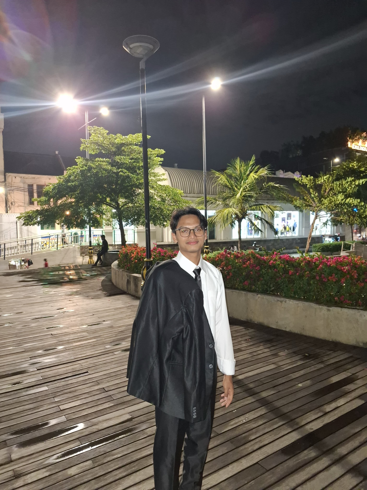

Assalamualaikum
Halo gimana kabarnya sehatkan?
Halo gimana kabarnya sehatkan?

🎉Selamat ulang tahun Aina el Harera! 🌟Hari ini merupakan momen penting, karena hari ini adalah harinya Rera nih . Setiap detik yang berlalu, kamu telah memberi warna dan kebahagiaan dalam hidup banyak orang. Kehadiranmu seperti bunga yang mekar, memberikan keindahan dan keceriaan di sekelilingmu. Di usia 19 ini, aku berharap kamu dapat mengejar semua impianmu dengan semangat yang tak tergoyahkan. Ingatlah, hidup adalah perjalanan yang penuh dengan pelajaran, dan setiap pengalaman baik juga buruk akan membentukmu menjadi pribadi yang lebih kuat dan bijaksana. Setiap momen yang kamu lewati adalah kenangan berharga. Sekali lagi 🎉 Selamat ulang tahun yang ke-19 dikit lagi jadi tante nih ,eh udah ya! Di usia ini, semoga kamu semakin menemukan jati diri dan mengejar impianmu. Ingatlah, setiap langkah yang kamu ambil adalah bagian dari perjalanan hidup yang indah. Terus bersinar dan berikan yang terbaik!. Semoga cinta dan kebahagiaan selalu menyertaimu. Ingatlah bahwa orang terdekatmu termasuk saya hhe, akan selalu ada untuk mendukungmu dalam setiap langkah yang kamu ambil. Semoga yang disemogakan tersemogakan. Jangan terlalu mikirin yang gak seharusnya di pikirin hidup emang kadang kiding. Semoga panjang umur dan sehat selalu ya neng. Selamat ulang tahun! Semoga semua impianmu terwujud, dan tahun ini dan tahun kedepanya dipenuhi dengan pengalaman serta peluang yang tak terlupakan. 💖 " أتمنى أن يملأ عيد ميلادك بلحظات سعيدة " (Gak tau ini artinya bener engga dapet dari google:v )